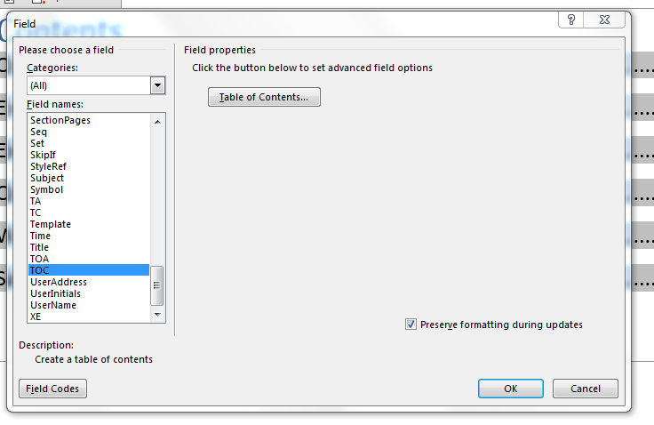
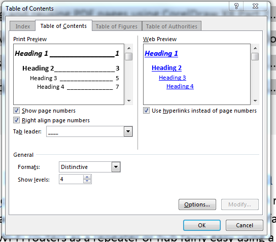
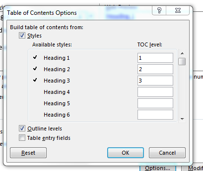
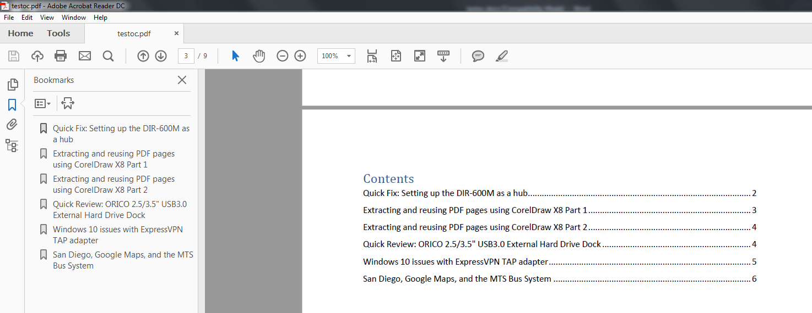

Word 2016 TOC, hyperlinks, and PDFs¶
Users of Adobe Reader or third-party PDF viewers are no doubt accustomed to using the Bookmarks/Document tree pane for clicking chapters and sections of a PDF document. However, if you want your readers to also have clickable links on the table of contents itself once a Word document is exported to PDF, perform the following steps on the Word document before you export the .docx file to PDF:
Right-click the Word document’s table of contents, and then click Edit Field.
Select TOC from the Field names box, and then click Table of Contents.
Select Use hyperlinks instead of page numbers.
By default, the Use hyperlinks instead of page numbers is selected, unless your school, company, or organization modified the basic .docx template. If this box is unchecked, table of content entries can’t be used to navigate around the Word document on the .docx file and the exported PDF.

Note
The entries shown in the Navigation Pane in Word don’t necessarily reflect what bookmarks will appear on your output PDF file. The Navigation Pane includes all levels of a Word document based on the Heading styles you use. You can view the Navigation Pane by clicking the View tab > Navigation Pane.
Increase the number of levels that appear on the TOC using the Show levels setting or click Options and modify the TOC level as needed. The TOC levels selected determines the depth of the document tree that appears on the PDF output’s Bookmark pane. Click OK.
Note
You can also select which styles are included as part of the TOC levels.
Click File > Export > Create PDF/XPS Document > Create PDF/XPS.
Note
As always, make sure your table of contents is updated before exporting the Word document to PDF.
If you want the smallest file size for your PDF, select Minimum size, and then click Options.
Ensure that the option Create bookmarks using Headings is selected, and then click OK.
Click Publish.
The PDF output will have bookmarks created for the table of content entries and any table of content entries on the PDF will be clickable.
Note
The clickable entries on the table of contents will not work with all third-party PDF viewers for Android, iOS, or Windows 10 Mobile. Most PDF apps, however, can detect bookmarks on a PDF created from Word.